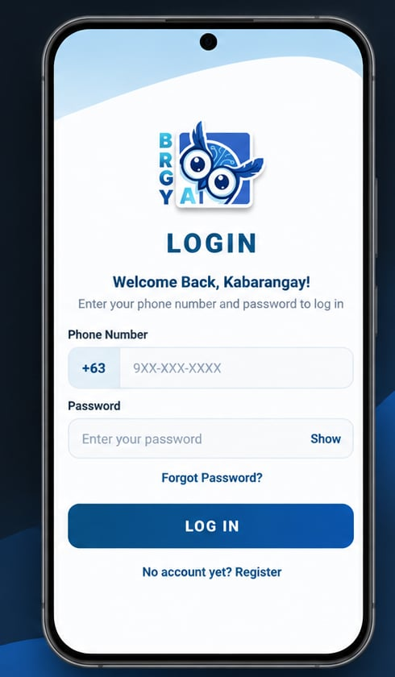

Cloud Computing
Microsoft Azure
Virtual Machines
Azure Automation
Web Hosting
INFORMATION TECHNOLOGY STUDENT
I'm an IT student interested in Cloud Engineering, Network Engineering, and Software Quality Assurance. I enjoy learning through hands-on projects and solving technical problems.
GET TO KNOW ME
I'm currently taking Bachelor of Science in Information Technology at Universidad de Manila. My main interests are cloud infrastructure and computer networking.
Through academic projects, I've gained hands-on experience in Microsoft Azure, virtual machines, network configuration, web hosting, and system documentation. I've also worked on frontend development, UI/UX activities, and software testing.
I'm looking for an IT internship where I can apply what I've learned while gaining experience in a professional environment.
WHAT I'VE WORKED WITH
Microsoft Azure
Virtual Machines
Azure Automation
Web Hosting
Cisco Packet Tracer
IP Addressing
Azure VNets & Subnets
Basic Routing & SSH
Frontend Development
GitHub
Firebase Firestore
Figma
HANDS-ON EXPERIENCE
A collection of academic activities and projects that I've worked on. My Azure labs are documented with screenshots and implementation results. The original cloud resources are no longer active.
Created a Windows virtual machine in Azure, installed IIS, and hosted a static website. Also explored deployment using Azure Static Web Apps and GitHub.
Configured an Azure virtual network, subnets and route tables. Created an Ubuntu virtual machine and established SSH connectivity after resolving setup challenges.
Configured an Azure Automation Account, imported a VM shutdown runbook, and created a schedule. Troubleshot permissions to execute the automation.
Developed a Two Truths, One Lie web application with Firebase Firestore integration for storing and displaying submitted game entries.
Built a basic calculator for two-number arithmetic operations, including a light and dark mode interface.
Designed a task organizer prototype using Figma. Collected user feedback about mobile responsiveness, navigation, and interface usability.

BRGY-AI is a Retrieval-Augmented Generation (RAG) based legal information and document assistance system developed for Barangay 134. It includes a mobile application for residents and a web-based administrative dashboard.
My Role: Manual QA Contributor
Contributed to the quality assurance process by creating 55 manual test cases and evaluating system features through functional testing. Helped check expected results, actual behavior, and potential system issues.
Academic group capstone project. My primary contribution focused on manual software testing and test case documentation.
Barangay Issuance and Complaint Management System. Assisted with frontend development and system documentation.
Visit WebsiteA digital lost and found management system. Worked on the frontend for recording lost and found items.
Visit WebsiteLEARNING & TRAINING
Cisco Networking Academy
Course completion certificate issued January 15, 2026.
Computer Systems Servicing
Computer Systems Servicing credential document.
Password to open PDF:
05312005E
MY BACKGROUND
Interested in learning more about my background, education, technical skills, and projects? You can view my resume here.
07 / CONTACT
I'm interested in IT internship opportunities where I can learn from experienced teams and contribute to cloud infrastructure, networking, software quality assurance, or other technology-related projects.